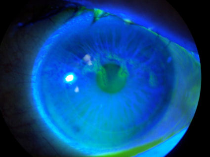

Ocular herpes (HSV) is one of the leading causes of blindness from corneal disease worldwide. LASIK may lead to herpes simplex virus activation, resulting in sight-threatening herpes simplex keratitis lesions.
Problems from Lasik? File a MedWatch report with the FDA online. Alternatively, you may call FDA at 1-800-FDA-1088 to report by telephone, download the paper form and either fax it to 1-800-FDA-0178 or mail it to the address shown at the bottom of page 3, or download the MedWatcher Mobile App for reporting LASIK problems to the FDA using a smart phone or tablet. Read a sample of LASIK injury reports currently on file with the FDA.
Patients with LASIK complications are invited to join the discussion on FaceBook
Case report: Herpes Simplex Infection at Apex of Post-LASIK Cornea With Ectasia
Traumatic injury to the cornea by LASIK surgery may lead to compromised immune response. The photo below shows the cornea of a patient who developed ectasia and herpes simplex infection after LASIK. The patient presented with extreme pain and redness of the eye. Expensive anti-viral medications were prescribed. This condition may lead to permanent scarring with associated vision loss and need for corneal transplant. Click photo to enlarge.
Peripheral herpes simplex keratitis following LASIK.
Kamburoglu G, Ertan A.
J Refract Surg. 2007 Oct;23(8):742-3.
Several studies report recurrences of herpes simplex-1 keratitis after microkeratome-assisted LASIK... In the reported cases of herpetic reactivation after LASIK procedures done via a microkeratome and surface laser ablations, the trauma exerted by lamellar dissection and the ultrviolet light of the excimer laser have been blamed as the potential causes. In our case, the femtosecond laser or excimer laser as well as the inadvertent use of steriod drops postoperatively may have acted as the triggering factor for reactivation.
This next image is a photograph of a herpes keratitis lesion following LASIK surgery. This condition may lead to permanent scarring and blindness. History of herpes keratitis is a contraindication for LASIK surgery, as surgical trauma may trigger reactivation. Note: The faint ring around the cornea in this photo is the margin of the LASIK flap.

Disclaimer: The information contained on this web site is presented for the purpose of warning people about LASIK complications prior to surgery. LASIK patients experiencing problems should seek the advice of a physician.